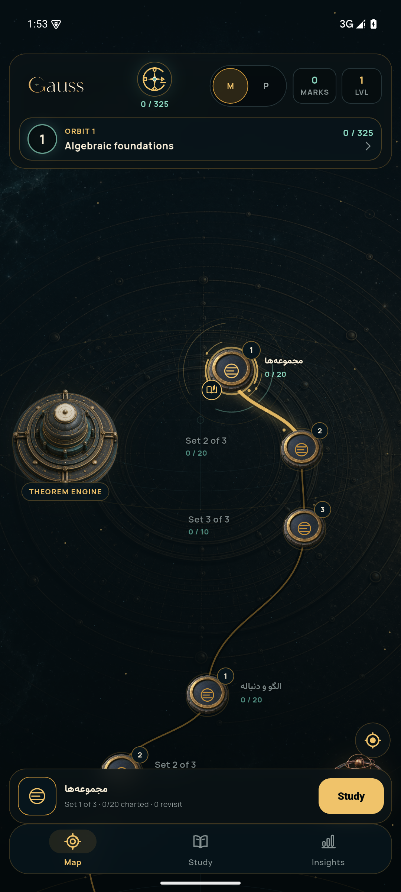
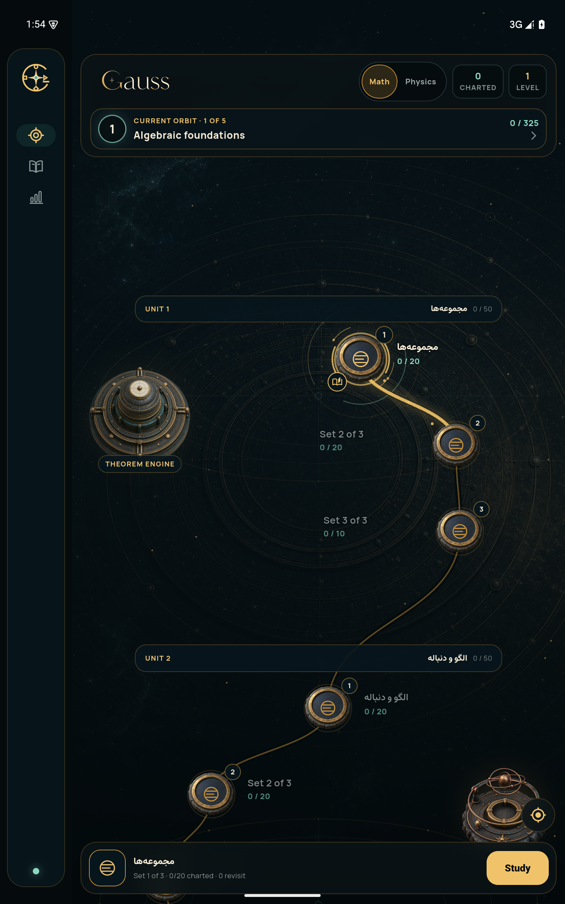
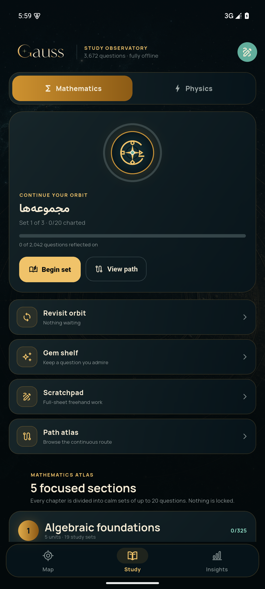
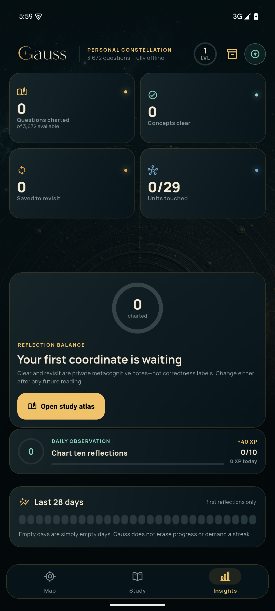

Gauss · Adaptive Perfection
G
گزارش نهایی
بازسازی تطبیقی Gauss
یک تجربهٔ شخصی، آفلاین و نجومی برای یادگیری ریاضی و فیزیک - با مسیر پیوسته، مطالعهٔ عمیق، قلم روی صورت سؤال و حقیقتِ دادهٔ محلی.
یک تجربهٔ شخصی، آفلاین و نجومی برای یادگیری ریاضی و فیزیک - با مسیر پیوسته، مطالعهٔ عمیق، قلم روی صورت سؤال و حقیقتِ دادهٔ محلی.
| گیت | نتیجه | شاهد |
|---|---|---|
| Static analysis | PASS | dart analyze --fatal-infos · No issues found |
| Flutter suite | PASS | 86/86؛ boundaryهای 599/600/1440، text scale، ink، split room، Map orbit و stateها |
| Android artifact | PASS | com.gauss.app · 1.0.106 (106) · امضای non-debug معتبر |
| ارتقای درجا | PASS | 105 → 106 با adb install -r؛ first-install ثابت |
| Web release | PASS | 3,521 files · 131,092,669 bytes · main.dart.js 3,768,732 bytes |
| حفظ داده | PASS | 30 فایل بانک سؤال و 3,410 فایل media در source، Flutter، Web و APK دقیقاً برابر |
SHA-256 BD42A22CA047CC04699A4B9133251A15795F14FECE8C4141788D8F0F2E34CD1F
141,719,881 bytes
آستانهٔ workspace دوپنجرهای Study Room؛ زیر آن جریان خطی و بالای آن سؤال و پاسخ مستقل و همزماناند.

Android release · phone Map

Android release · tablet Map
گوشی: یک ستون. Medium: ابزارها به 2x2. فضای بزرگ: ابزارهای یکردیف و atlas بدون nested-scroll.
قلم روی خود سؤال، پاکسازی فوری، سه ضخامت، mouse/stylus/touch و قفل paging در زمان ink آزمایش شدهاند.
metricهای tablet در viewport اول قابل اسکناند. Vault، tour و loading/error/empty/retry به زبان بصری واحد و حالتهای قابلدسترسی رسیدهاند.
Manrope برای chrome انگلیسی و Vazirmatn برای متن فارسی؛ کنتراست و microtype اصلاح شدهاند.

Android release · Study

Android release · Insights
median سه اجرای مستقل: shardهای سنگین 31 / 8 / 8 / 5ms، lookup کامل 86ms، hinted 1ms و cache گرم 0ms.
Android cold launch release: 1,213ms.
UI p95 در profile برابر 6.322ms بود. raster p95 در headless SwiftShader emulator برابر 207.100ms است و بهدلیل renderer نرمافزاری، نمایندهٔ سختافزار واقعی یا claim 60Hz نیست.
باقیمانده: هیچ P0/P1 شناختهشدهای باقی نمانده است. فقط برای ادعای battery/thermal/raster روی Android واقعی، همین workload باید روی دستگاه فیزیکی یا emulator با GPU host پایدار تکرار شود. این محدودیت هیچ اثری بر build، نصب درجا یا حفظ داده ندارد.
Gauss اکنون release artifact امضاشده، responsive evidence واقعی، قرارداد حفظ داده و مسیر ادامهٔ روشن دارد.